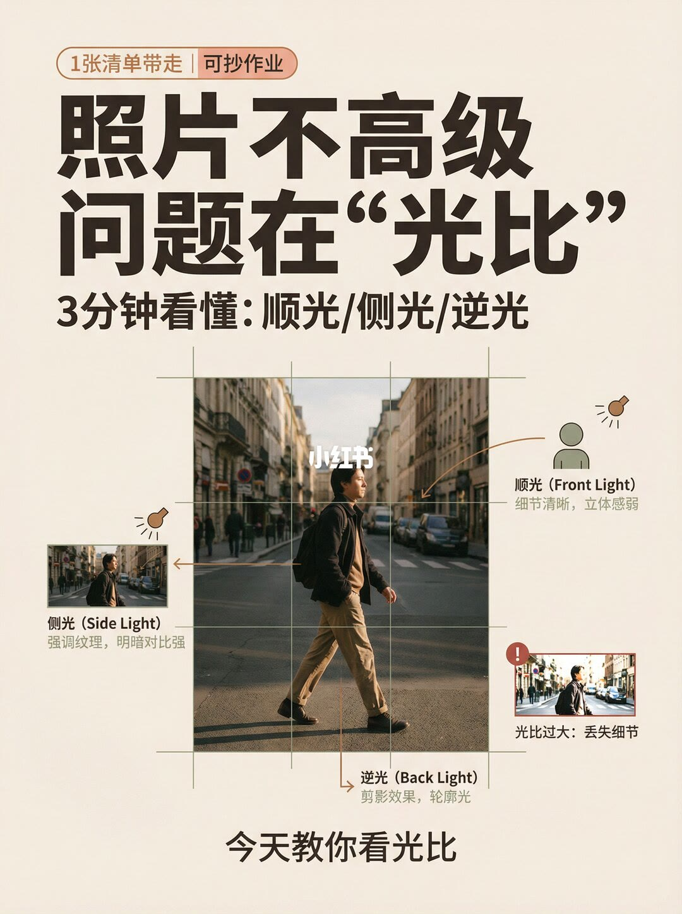
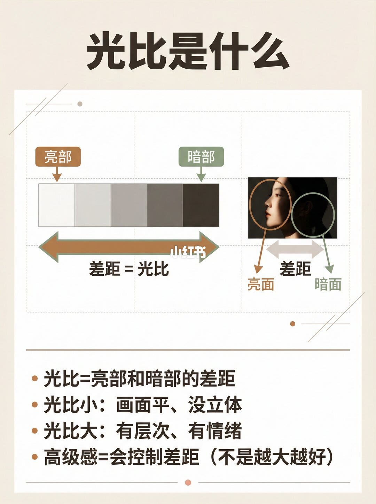
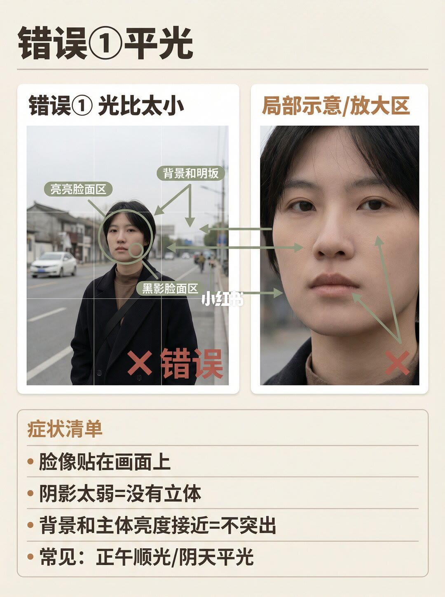
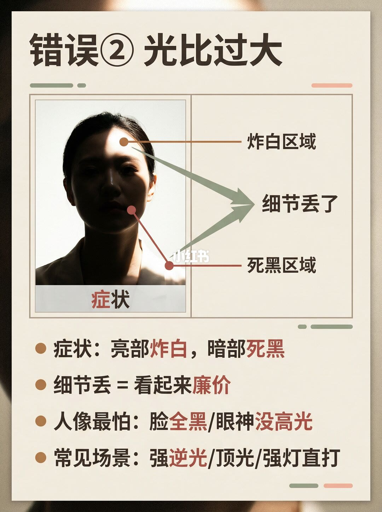
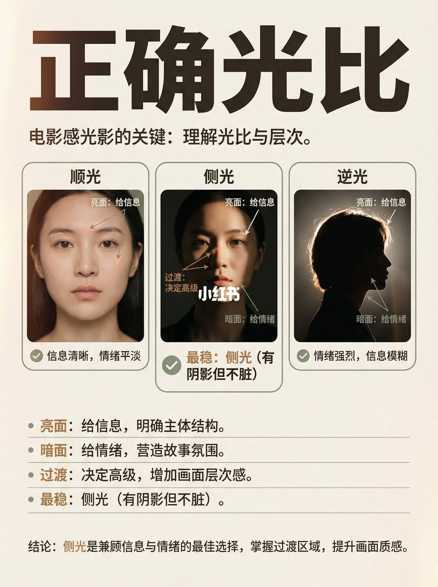
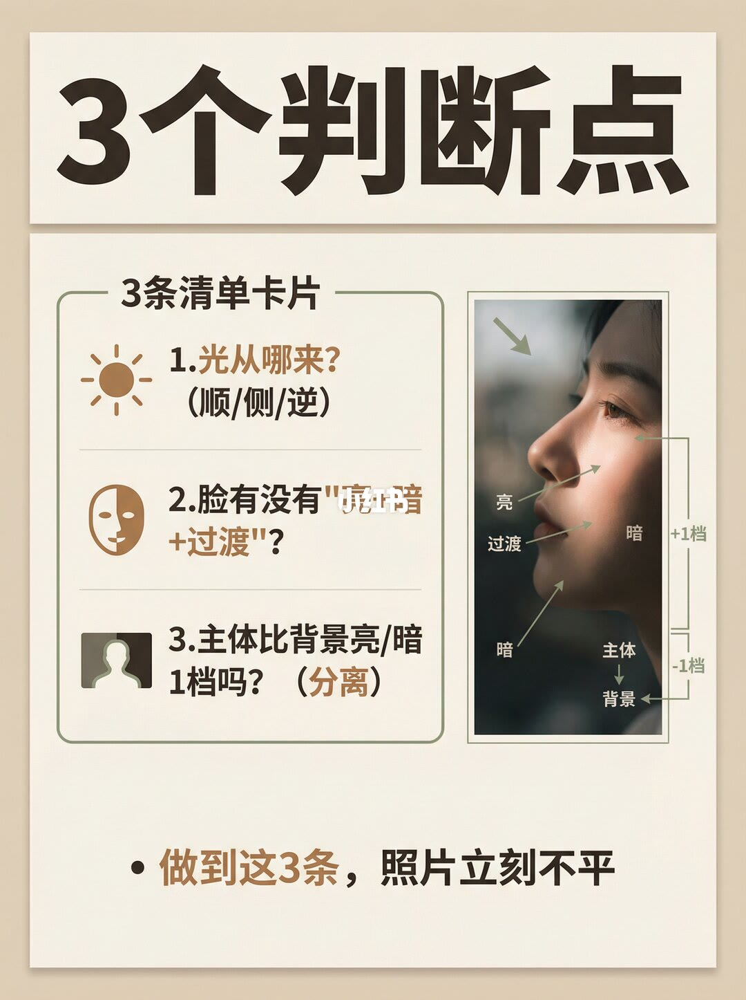
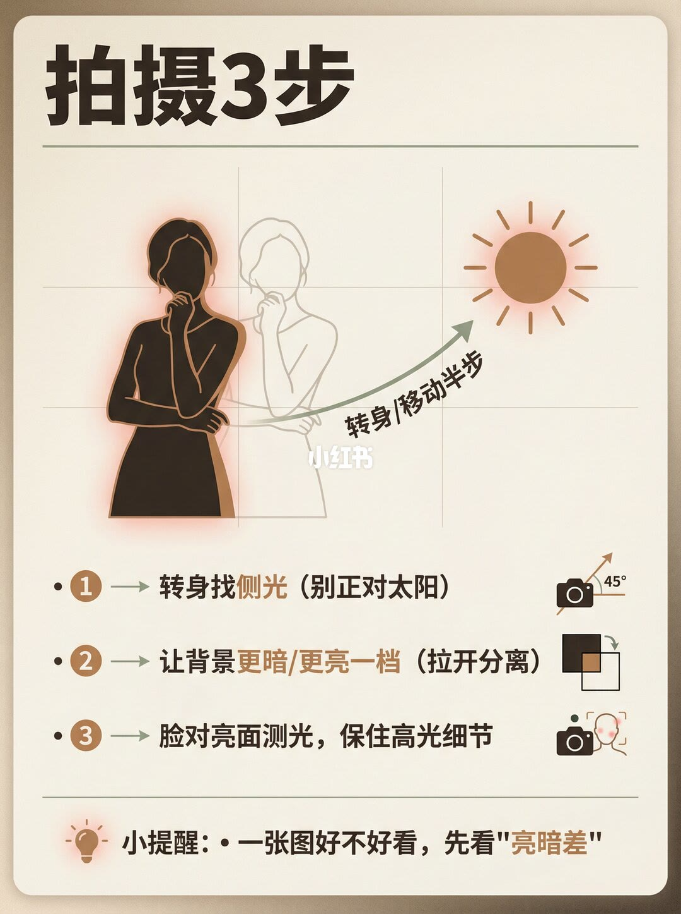
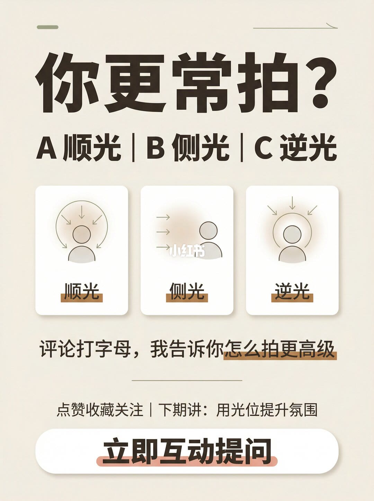

1/8
封面：三种光的方向，外加光比过大的警告

角标写着「1张清单带走｜可抄作业」。大标题是「照片不高级 / 问题在“光比”」，副题「3分钟看懂：顺光/侧光/逆光」。中间一张过街人像上叠了三分网格，四条标注分别指向不同方向：
顺光（Front Light）：细节清晰，立体感弱。侧光（Side Light）：强调纹理，明暗对比强，旁边有一张明暗更分明的小图。逆光（Back Light）：剪影效果，轮廓光。右下角一张几乎发白的小图配红圈叹号，写「光比过大：丢失细节」。页脚是「今天教你看光比」。这一页只给方向和定性后果，没有印出任何光比倍数。
2/8
光比就是亮部和暗部的差距

标题「光比是什么」。左侧一条从白到深灰的灰阶，左端标「亮部」，右端标「暗部」，中间双箭头写「差距=光比」。右侧一张侧脸，亮的一侧圈为「亮面」，暗的一侧圈为「暗面」，两圈之间也标了「差距」。
下面四条是这一套笔记的定义，后面几页都在用它：光比=亮部和暗部的差距；光比小：画面平、没立体；光比大：有层次、有情绪；高级感=会控制差距（不是越大越好）。这里的「大」和「小」都是定性说法，图上没有印出光比倍数。
3/8
错误①：平光，光比太小

标题「错误①平光」。左图题「错误① 光比太小」，右图题「局部示意/放大区」。阴天街景里，人物脸和天空都比较亮，左图右下有红叉和「错误」。绿色标注指向脸、脸侧和背景：可以读出的是「亮亮脸面区」「黑影脸面区」；第三条「背景和明…」最后一个字在「板」和「坂」之间无法确认。右图用箭头把这些区域放大到脸颊、鼻侧和下颌附近，说明亮暗差很小。
症状清单四条写得很清楚：脸像贴在画面上；阴影太弱=没有立体；背景和主体亮度接近=不突出；常见：正午顺光/阴天平光。这页把第 2 页的「光比小」落到一个具体场景，仍然没有给出测量数字。
4/8
错误②：光比过大，亮部炸白、暗部死黑

标题「错误② 光比过大」。人像额头一块被标成「炸白区域」，下颌和脖子一侧被标成「死黑区域」，两条箭头都指向「细节丢了」。图下先写「症状」，再列四条：症状：亮部炸白，暗部死黑；细节丢=看起来廉价；人像最怕：脸全黑/眼神没高光；常见场景：强逆光/顶光/强灯直打。
和第 3 页对读：平光是差距不够，这一页是差距过大到两端都没有细节。第 2 页说光比大「有层次、有情绪」，到这里被加上上限——大到炸白和死黑，作者改口叫廉价。封面右下角那张发白小图，就是这一页的缩略警告。
5/8
正确光比：亮面给信息，暗面给情绪，过渡决定高级

标题「正确光比」，副题「电影感光影的关键：理解光比与层次。」三张人像并排。顺光栏写「信息清晰，情绪平淡」，标注「亮面：给信息」。侧光栏打勾，写「最稳：侧光（有阴影但不脏）」，三处标注是「亮面：给信息」「暗面：给情绪」「过渡：决定高级」（「决定高级」几个字叠着小红书水印，与页下条目一致）。逆光栏写「情绪强烈，信息模糊」，同样标了亮面给信息和暗面给情绪。
页下四条把角色说死：亮面：给信息，明确主体结构。暗面：给情绪，营造故事氛围。过渡：决定高级，增加画面层次感。最稳：侧光（有阴影但不脏）。结论句是：「侧光是兼顾信息与情绪的最佳选择，掌握过渡区域，提升画面质感。」「最稳」「最佳」「不脏」都是作者的判断用语，图上没有测光读数。
6/8
三个判断点：方向、脸上的过渡、和背景差一档

标题「3个判断点」，框题「3条清单卡片」。第一条：光从哪来？（顺/侧/逆）。第二条印的是脸有没有「亮暗 + 过渡」；「亮暗」两字上压了水印，旁边图标是半边亮、半边暗的脸，右侧照片上也分开标了「亮」「过渡」「暗」。第三条：主体比背景亮/暗 1档吗？（分离）。
右侧侧脸：光从左上方来，鼻梁标「亮」，面颊标「过渡」，下颌和头后标「暗」。竖向括号把脸标成「主体」并写「+1档」，把后面标成「背景」并写「-1档」。页脚：「做到这3条，照片立刻不平。」这一页是全篇唯一印出曝光档位的地方，印出来的就是「1档」「+1档」「-1档」，没有写成光比分数，也没有写怎么用测光表得到这两个数。
7/8
拍摄三步：转身找侧光，拉开背景，保住亮面

标题「拍摄3步」。示意图里人影转向太阳，弧线上写「转身/移动半步」。第一步旁的图标印有「45°」，正文没有再解释这个角度是光的入射角还是身体转角。三步正文是：①转身找侧光（别正对太阳）；②让背景更暗/更亮一档（拉开分离）；③脸对亮面测光，保住高光细节。小提醒：一张图好不好看，先看「亮暗差」。
这三步和第 6 页的三问是同一件事的操作版：先改光的方向，再改主体和背景的分离，最后按亮面曝光，避免走到第 4 页那种炸白。第二步的「一档」与第 6 页的「1档」是同一句数量，仍然没有换算成光比倍数。
8/8
收尾互动：你更常拍顺光、侧光还是逆光

标题「你更常拍？」，选项「A顺光｜B侧光｜C逆光」。三张简图分别画了正对脸的光、从侧面来的光、从背后打出轮廓的光。下面写「评论打字母，我告诉你怎么拍更高级」。分隔线后是「点赞收藏关注｜下期讲：用光位提升氛围」，底部按钮「立即互动提问」。这一页没有新的判断标准，也没有新的数字。
收尾
先看亮暗差，再决定要不要侧光
结论
照片不高级，这套笔记的答案是光比没被控制。光比在第 2 页被定义成亮部和暗部的差距：太小就平、没立体（第 3 页），大到炸白和死黑就丢细节、显得廉价（第 4 页）。作者认为兼顾信息和情绪的做法是侧光，并且必须留下过渡（第 5 页）。拍摄时按三问检查、按三步调整（第 6–7 页）。
支撑页
定义在第 2 页；两种错误在第 3 页和第 4 页；顺光、侧光、逆光的比较和结论句在第 5 页；可执行清单在第 6 页和第 7 页。第 1 页是总览，第 8 页只做互动，不增加操作标准。
边界
图上没有印出光比倍数。印出来的数量只有第 6 页的「1档」「+1档」「-1档」，以及第 7 页图标上的「45°」。「+1档」和「-1档」是分别标在主体和背景上的，笔记没有写两者相加，也没有给测光步骤。第 3 页绿色标注可以确认「亮亮脸面区」「黑影脸面区」；「背景和明…」末字无法确认。第 5 页的「最稳」「不脏」「最佳选择」是作者判断，不是测量结果。第 2 页「光比大：有层次」和第 4 页「光比过大：廉价」之间的分界，只给了炸白、死黑、脸全黑、眼神没高光这些可见症状，没有给一个数值门槛。